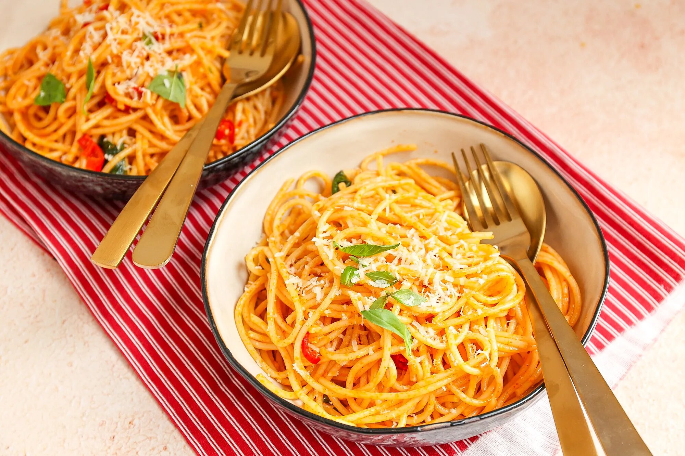

Pasta met broccoli en roomsaus

Ingredienten
- 200 gr spaghetti
- 2 tenen knoflook
- 1 rode peper
- 1 tl paprikapoeder
- 50 gr Parmezaanse kaas
- 1 sjalotje
- snufje zwarte peper
- kopje kookvocht
- boter of olie
Bereiding
- Kook de pasta volgens de instructies op de verpakking.
- Snipper het sjalotje en snijd de knoflook en rode peper fijn.
- Verwarm een beetje boter of olie in een pan en voeg het sjalotje toe.
- Na circa 2-3 minuten voeg je de knoflook, rode peper en paprikapoeder toe.
- Bak dit een paar minuten en voeg dan een kopje kookvocht en de gekookte pasta toe. Meng kort door elkaar en
voeg dan de Parmezaanse kaas toe. Meng nogmaals door elkaar en klaar!